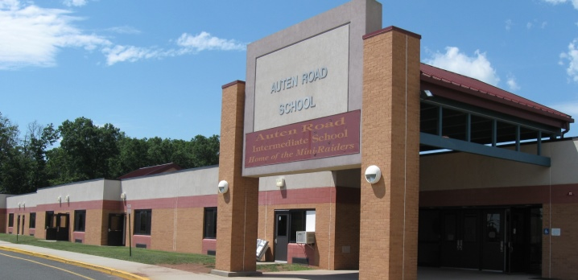

Auten Road Elementary School was an elementary school in 1999 and converted to an Auten Road Intermediate School (Aris) or also known as an intermediate school in 2002.
The school is new and is doing very good in kepping up with current school systems
Auten Road Intermediate School is a public school located in Hillsborough, New Jersey, with the zip code 08844. It serves students in grades 5 and 6. The school is part of the Hillsborough Township Public School District.
Auten Road Intermediate School provides a comprehensive educational program aimed at fostering academic excellence and personal growth. The school offers a wide range of subjects, including language arts, mathematics, science, social studies, and physical education. In addition to core subjects, students also have opportunities to explore art, music, and technology.
The school is equipped with modern facilities and resources to support student learning. It has well-equipped classrooms, a library, computer labs, and a gymnasium. The staff at Auten Road Intermediate School is dedicated to creating a safe and supportive learning environment for all students.
In addition to academics, Auten Road Intermediate School offers various extracurricular activities and clubs for students to participate in. These include sports teams, music ensembles, drama club, student council, and more. These activities provide students with opportunities to develop their talents, interests, and leadership skills.
Auten Road Intermediate School maintains a strong partnership with parents and the community. It encourages parental involvement through volunteer opportunities, parent-teacher conferences, and regular communication. The school also organizes events and programs to engage the community and promote a sense of belonging.
Overall, Auten Road Intermediate School in Hillsborough, New Jersey, 08844, is committed to providing a quality education and a nurturing environment for its students.